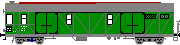

Krümelbahn
Krümelbahn
Güterzugsteuerwagen GDS145
Allgemeine Informationen
Aus: Eisenbahn-Magazin 3/94 (Seite 40 und 41): Fahrzeug-Geschichte: Güterzug mit Steuerwagen
Das Reichsbahn-Zentralamt München prüfte 1948 die Möglichkeiten des Einbaus von Wendezug-Führerstände in Güterwagen.
Zu diesem Zweck wurden 1949 zwei GGhs Gattungsbezirk Bromberg als "Steuerwagen für Güterverkehr mit Motorlokbetrieb" hergerichtet.
Die Umbauarbeiten nahm das Ausbesserungswerk Nürnberg vor.
Die Daten des GDS 145 901 und GDS 145 902:
Während die Steuerwagen einmännig gefahren werden konnten, mußte auf den Dieselloks ein zweiter Mann mitfahren, da zu diesem Zeitpunkt noch keine Sicherheitsfahrschaltung (Sifa) eingebaut war.
Lüp
18,00m
Drehzapfen-Abstand
12,00m
Radstand im Drehgestell
2,00m
Ladelänge
14,10m
Ladefläche
38,00m2
Ladegewicht
50,00t
Eigengewicht
24,24 bzw. 24,76t
Zugewiesen wurden die beiden Wagen der Bundesbahndirektion Hannover. Offiziell wurden sie später in GVS umbenannt, doch - wie die Aufnahme aus 1963 belegt - erfolgte diese Umzeichnung lediglich auf dem Papier.
Wenig ist über den Einsatz der beiden Wagen bekannt.
(...)
So dürfte das im April 1963 im Bahnhof Münster-Lager aufgenommene Foto das einzige Bilddokument bleiben, das wenigstens die letzte Station dieses nach wie vor grün gestrichenen Güterzug-Wendezugsteuerwagens illustriert.
Damals war das Fahrzeug noch im Einsatz, wobei jedoch anzunehmen ist, das es nicht als Steuerwagen, sondern als Stück- oder Expressgut-Kurswagen in lokbespannten Güterzügen mitlief.
Aus: Eisenbahn-Kurier: Die Diesellokomotiven der Wehrmacht, S.196
Hier (Anm.: Bw Hannover Hgbf.) waren ab 1949 versuchsweise Leig-Wendezüge aus V36 und umgebauten Vierachser-Güterwagen im Einsatz (siehe auch S.284). Das RZA München hatte dafür zwei gedeckte 18-Meter-Wagen, Bauart GGhs, Gattungsbezirk Bromberg, mit Steuerabteilen ausrüsten lassen
und als GDS 145 901 und 902 eingenummert.
Auch ein Zweiachser-Pärchen - GDS 144 901 und GDB 140 901 -, umgebaut aus kurzgekuppelten Gihms-Wagen, wurde für den Versuch "Steuerwagen für Güterverkehr mit Motorlokbetrieb" hergerichtet; ebenfalls wohl im Zusammenlauf mit V36. Die Einsätze in Hannover Hgbf endeten 1951.
Aus: Eisenbahn-Kurier: Die Diesellokomotiven der Wehrmacht, S.284
Die ersten V36 tauchten hier (Anm.: Bw Hannover Hgbf.) bereits 1947 auf. Planmäßig eingesetzt wurden die Loks aber offenbar erst ab Mitte 1949. Zum Ende dieses Jahres waren zwei, Ende 1950 drei V36 vorhanden.
Eine davon wurde im Stückgutschnellverkehr (Leig) auf den Strecken nach Soltau (88,0km) und Bad Nenndorf (39,3km) eingesetzt. Offenbar liefen hier die bereits weiter vorn (Anm.: S.196) beschriebenen Leig-Wendezüge mit Güterzug-Steuerwagen GDS 145 901 oder 902 plus V36.
Monatsleistung: 5000-6000km. Die zweite und (soweit vorhanden) dritte V36 dürften als Reservelok vorgahalten worden sein bzw. sich im Rangierdienst nützlich gemacht haben.
Der Leig-Verkehr mit V36 endete im Herbst 1951.
Stationierungen V36 in Bw Hannover Hgbf:
erster Bahnhof = übernommen von, zweiter Bahnhof = abgegeben an
V36 111
14.10.49 Bremen Hbf - 17.10.50 Bamberg
V36 207
13.10.50 Bamberg - 27.08.51 Hann.-Linden
V36 233
23.06.49 neu - 30.09.51 Hann.-Linden
V36 252
23.12.50 Bremen Hbf - 11.04.51 Bremen Hbf
Erwähnt wird der Steuerwagen weiterhin in:
- Eisenbahn-Kurier: Triebwagen der deutschen Reichsbahn, S.374
- Eisenbahn-Journal 4/10 (Seite 42): Wendezüge - Auftakt mit V36
Ein späteres Sichtungsbild zeigt einen der beiden GDS als Gerätewagen 634 (30 80 978 0 012-9, davor Regensburg 8213 II, davor Kassel 6716).
Ein weiteres Foto eines vermutlich ex GDS 145 90x gibt es bzw. auf Eisenbahnstiftung.de.

Baubeschreibung

GDS145
in Betrieb seit: 11.1994
Umfangreiche Umbauanleitung sind erschienen in
- Eisenbahn-Kurier 1/96 (Seite 98 bis 100):Güterzugsteuerwagen: H0-Umbau eines GDS145 aus einem Roco-Bromberg
- Eisenbahn-Journal 5/11 : Fahrzeugbau: Güter-Steuerwagen GDS 145.9 - Groß, grün, rätselhaft
Ich habe mir aus einer 2mm Plexiglasplatte den kompletten Fenstersatz auf einer Drehbank mit Kreuztisch selbst gefräst. Dies wirkt plastischer als hinterlegte Klarsichtfolie, da die Fenster richtig im Fensterrahmen eingefügt sind.
Beschriftung
| Hersteller | Epoche | H0 | TT | N | Bemerkungen |
|---|---|---|---|---|---|
| Andreas Nothaft | III | 7627 | Güterwagen-Komplettbeschriftung GGths 43, DB Individualisieren mit: - Betriebsnummer 145 901 - Gattung GDS |
Über cults3d.com kann inzwischen eine STL-Datei erworben werden, um damit die für den Umbau benötigten Teile mit einem 3D-Drucker drucken zu können.